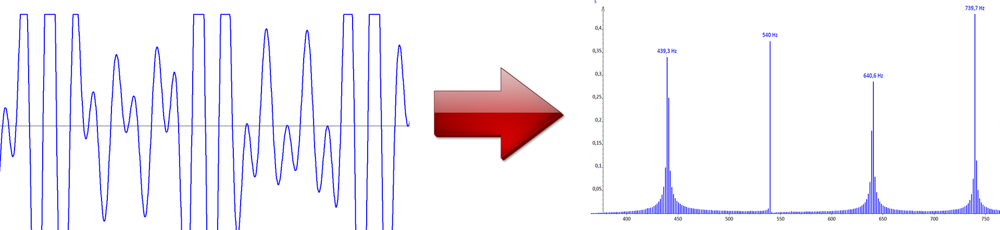
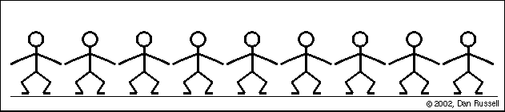
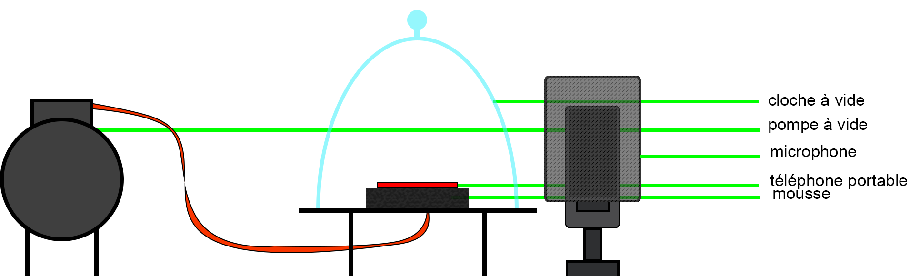
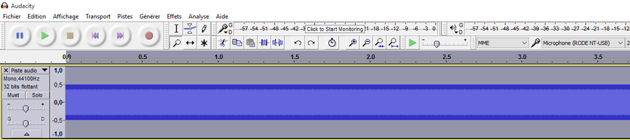
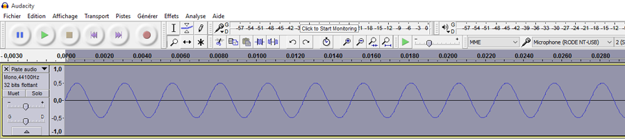
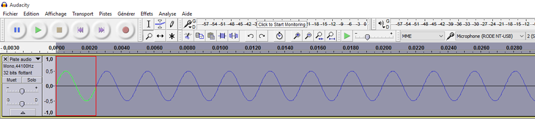
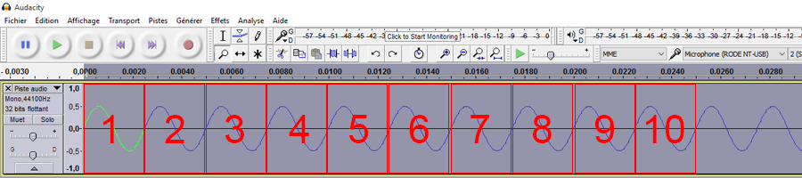
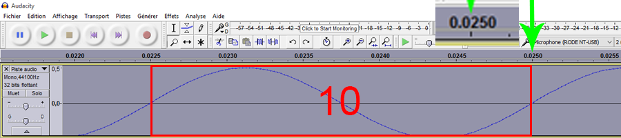
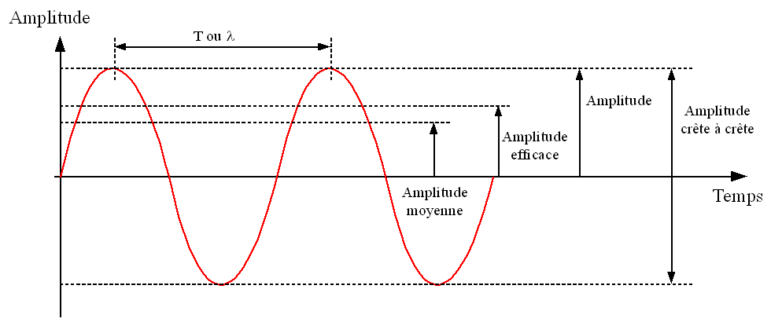

PARTIE I
DÉFINITION ET CARACTÉRISTIQUES DU SON
DAUDÉ MONDET LOÏC
La musique, la voix, le bruit, ces mots désignent tous certains sons. On sait pertinemment reconnaître un bruit de moteur d’une mélodie ou de la voix d’un ténor mais savez-vous que tous, tous ces sons sont en réalité composés uniquement d’ondes sinusoïdales. D’un point de vue purement scientifique il n’y a donc aucune différence entre le son produit par le dernier décollage d’une fusée Ariane et celui que peut émettre votre chaîne-hifi lorsque vous écoutez un morceau de Mozart ou Bach, hormis le nombre d’ondes sinusoïdales qui le compose, leurs fréquences et leurs amplitudes. Nous allons donc dans cette première partie expliquer ce qu’est le son en traitant des trois grandes caractéristiques qui le définissent : le caractère ondulatoire de ce dernier, la fréquence de cette onde et enfin son amplitude.
Le son : une onde
Le son est donc une onde ou plus précisément il est composés d’ondes. En effet tout son peut-être décomposé en une somme de plusieurs ondes sinusoïdales, grâce à ce qu’on appelle la transformée de Fourier.
Cette décomposition peut être effectué très simplement via différents logiciels de traitement ou d'analyse du son. Le logiciel Regressi permet de tracer la représentation du signal sonore puis d'appliquer à ce dernier la transformée de Fourier.

Sur les images ci-dessus nous pouvons donc remarquer, à gauche, un son généré via un logiciel audacity, composé de plusieurs ondes sinusoïdales et à droite, le graphique obtenu avec le logiciel Regressi après que ce dernier ait effectué la décomposition de Fourier sur ce son.Nous pouvons ainsi déterminer deux types de sons : les sons purs (ceux qui ne sont composés que d'une seule onde sinusoïdale) et les sons complexes (composés de plusieurs ondes sinusoïdales).
Lorsque qu'une onde sonore est émise par un haut-parleur aucune des particules présentes dans l'air ne se déplacent du haut-parleur jusqu'à vos oreilles c'est seulement l'onde qui se "déplace". Il se passe un phénomène semblable dans les stades lors des olas. En effet lors de celles-ci les supporters ou les spectateurs ne se déplacent en aucun cas dans les gradins, ils se contentent de lever et de baisser les bras.
 À l'instar de la Ola le son nécessite un milieu dans lequel se propager, dans notre exemple précedent le milieu est représenté par les suppoters/spectateurs et la Ola correspond à l'onde sonore.
À l'instar de la Ola le son nécessite un milieu dans lequel se propager, dans notre exemple précedent le milieu est représenté par les suppoters/spectateurs et la Ola correspond à l'onde sonore.
De plus le son est une perturbation mécanique où les déformations du mileu se font dans la même direction que celle de la propagation, on appelle ceci une onde longitudinale. Elle correspond à une succession de compressions et de dilatations du milieu dans lequel elles se propagent.
Nous avons donc effectué une expérience afin de vérifier expérimentalement la nécessité d'un milieu pour que le son se propage. Pour ce faire nous avons mis en place le dispositif suivant :

| Remarque : |
|---|
| Avec de la réflexion, nous remarquons que le téléphone parvient tout de même à recevoir l'appel malgré le vide créé, pourtant cet appel se fait aussi grâce à des ondes. Ces ondes ne sont donc pas du même type que les ondes sonores. En effet, ce sont des ondes électromagnétiques qui n'ont pas les mêmes caractéristiques ni les mêmes restrictions que les ondes sonores. Elles parviennent, elles, à se propager dans le vide. |
Fréquence d'une onde sonore
En physique, la fréquence est le nombre de fois qu'un phénomène périodique se reproduit par unité de mesure du temps (définition Wikipédia). La fréquence d'un son pur correspond au nombre de compressions/dilatations pour une échelle de temps donnée, ce qui s'interprète comme le nombre de fois que l'objet/le haut-parleur/la membrane vibre en un certain temps. Cette fréquence notée f peut s'exprimer en Hertz (Hz) si et seulement si le temps est en seconde. Plus la fréquence d'un son augmente plus le son sera aigu, inversement plus la fréquence diminue plus sera grave. L'oreille humaine chez la plupart des individus perçoit des sons d'une fréquence de 20 à 20 000 Hz, en dessous de ce seuil on appelle ces sons des infrasons, au-delà des ultrasons. Par exemple un son à 400 Hz sera perçu plus grave qu'un son à 2000 Hz.
400Hz
2000Hz
Calcul de la fréquence d'un son pur :
Tout d'abord nous allons agrandir la vue de la piste jusqu'a qu'apparaisse la sinusoïde. Ensuite nous identifions le motif périodique de base (que le pourrait décrire comme la plus petite courbe qui se répète tout le temps) Nous pouvons maintenant compter combien de fois se motif se produit par seconde. Pour rendre le calcul plus précis nous baserons notre mesure sur 10 périodes en prenant comme période 1 le première depuis le début de la piste, autrement dit celle qui débute à t=0. Nous augmentons encore le niveau de zoom cette fois en se centrant sur la période 10 et nous relevons le temps depuis le début de la piste. Finalement il nous suffit d'appliquer la formule suivante pour obtenir la fréquence en Hz : Avec N : nombre périodes et T : le temps en secondes de N périodes. Ce qui dans notre exemple correspond à ceci : Nous retrouvons donc bien la fréquence de 400 Hz.
Amplitude d'une onde sonore.
L'amplitude d'une onde sonore est son intensité et est en lien avec ce que nous appelons le volume. Elle se mesure en prenant l'écart maximal par rapport à la valeur médiane. Plus l'amplitude est importante plus la pression exercée par les ondes sonores est grande.
La puissance acoustique est exprimée en Watts et permet de définir dans un premier temps l'intensité acoustique d'un son en Watts par mètre carré (W/m2). À partir de cette mesure nous pouvons désormais définir un niveau sonore exprimé en décibel (dB). La relation qui lie l'intensité acoustique au niveau sonore est la suivante : L = 10 log (I/I0) avec L en dB, I en W.m-2 et I0 qui vaut 10-12W.m-2.
PARTIE II : LES EFFETS DU SON